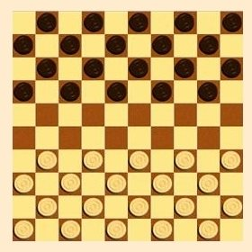
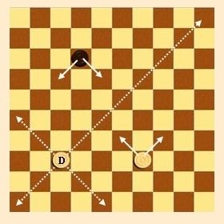
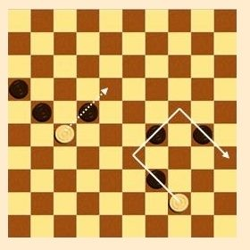
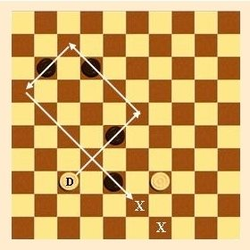

Règles du Jeu de Dames
Le jeu se pratique sur un damier de 10 cases sur 10, orienté avec une case foncée en bas à gauche.
Chaque joueur possède 20 pions, placés sur les cases foncées des 4 premières rangées.
Les joueurs jouent chacun à leur tour. Les blancs commencent toujours.
Le but du jeu est de capturer tous les pions adverses.
Si un joueur ne peut plus bouger, même s'il lui reste des pions, il perd la partie.
Chaque pion peut se déplacer d'une case vers l'avant en diagonale.
Un pion arrivant sur la dernière rangée et s'y arrêtant est promu en « dame ». Il est alors doublé (on pose dessus un deuxième pion de sa couleur).
La dame se déplace sur une même diagonale d'autant de cases qu'elle le désire, en avant et en arrière.

La prise par un pion
Un pion peut en prendre un autre en sautant par dessus le pion adverse pour se rendre sur la case vide située derrière celui-ci. Le pion sauté est retiré du jeu.
La prise peut également s'effectuer en arrière.
La prise est obligatoire.
Si, après avoir pris un premier pion, vous vous retrouvez de nouveau en position de prise, vous devez continuer, jusqu'à ce que cela ne soit plus possible.
Les pions doivent être enlevés à la fin de la prise, pas un par un au fur et à mesure.

La prise majoritaire
Lorsque plusieurs prises sont possibles, il faut toujours prendre du côté du plus grand nombre de pièces.
Cela signifie que si on peut prendre une dame ou deux pions, il faut prendre les deux pions.
Dans l'exemple ci-dessous, un pion blanc peut prendre un pion noir, mais l'autre pion blanc peut en prendre 3, c'est donc ce coup qui doit être joué.

La prise par la dame
Puisque la dame a une plus grande marge de manoeuvre, elle a aussi de plus grandes possibilités pour les prises.
La dame doit prendre tout pion situé sur sa diagonale (s'il y a une case libre derrière) et doit changer de direction à chaque fois qu'une nouvelle prise est possible.
On ne peut passer qu'une seule fois sur un même pion.
En revanche, on peut passer deux fois sur la même case.
Dans l'exemple ci-dessous, la dame blanche peut prendre les 4 pions noirs et pourra s'arrêter au choix sur l'une des 2 cases marquées d'une croix.
Enfin, la partie peut être déclarée nulle si aucun des deux joueurs ne peut prendre toutes les pièces adverses (par exemple 3 dames contre une).
